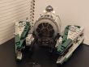
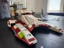
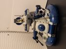

As a kid I was really into star wars during the the release of the third prequel movie, Revenge of the Sith. Around this time I was also into lego. I started driving for amazon during lock down and one of my usual deliveries was the lego store in Pheasent lane Mall. Seeing the star wars lego sets brought back nostalgic memories from that age and one day I began collecting sets and immersing my self in the online lego community
A table consisting of my Lego star wars sets. It include pictures as well as the set number and number of minifigures that come with each set
| Set Name | Set Number | Pieces | Description | Picture |
|---|---|---|---|---|
| Jedi Star Fighter | 778344 | 211 | Obi-Wan's star fighter introduced fans to this classic in Attack of The Clones |
|
| Yoda Star Fighter | 743553 | 280 |
While never making an apearrence in the prequels or original trilogy, It does make several apearences in the Clone Wars animated series. It echoes images of the TIE Fighter from Episode 4 conecting both parts of the lore |
 |
| Fighter Tank | 778343 | 262 | Its first apearence was in the 2002 Clone Wars game (Xbox exlcusive). It would later show up two more times in the animated series |
 |
| AAT | 756361 | 245 | The bottom of this piece is lined clear dome tile pieces(34828) to give this hover tank the apearence of floating |
 |